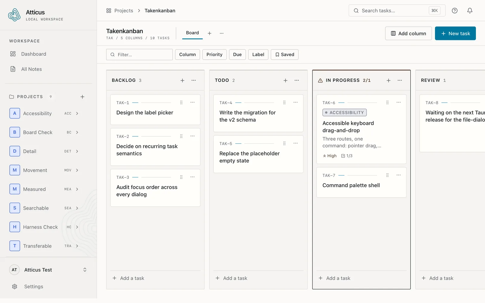
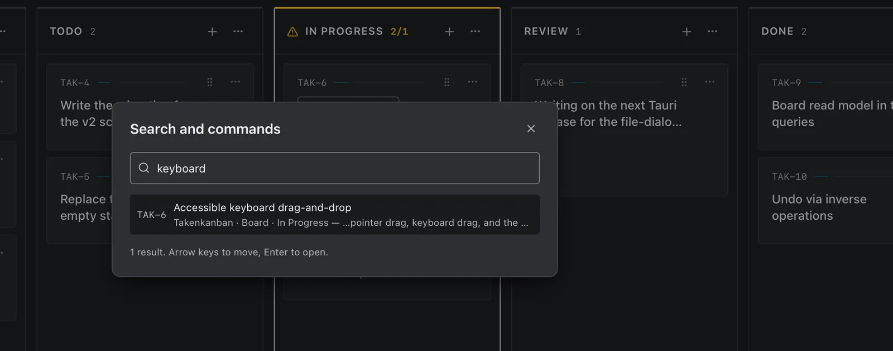

01
Return without rereading the repo.
Three weeks away from a project and the question is never “what does this code do” — it is “what was I in the middle of”. Projects, boards, columns, and a work-in-progress limit answer that before you open the editor.
When the memory is a fragment rather than a place, ⌘K
searches every project at once and tells you which board and column the match sits
in.
- StructureProjects → boards → ordered columns
- LimitsOptional WIP ceiling per column, flagged when breached
- RecallGlobal search, board filters, saved filters

